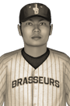

|
|
|  | Bobby Sakamoto Comes Home, Signs With Chicagou Tuesday, December 14th, 1926 Bobby Sakamoto was ecstatic when asked by reporters about playing for his hometown team, the Chicagou Frontenacs. "It's been a lifelong dream to play here and I'm honored to have my name as part of the team's history," he said. Sakamoto grew up nearby a huge Chicagou fan, and said that being close to home will only make him a better player. "Having friends and family around for half the season is going to really mean a lot. I'm looking forward to bringing home some championships to the Chicagou Frontenacs fans." |   |